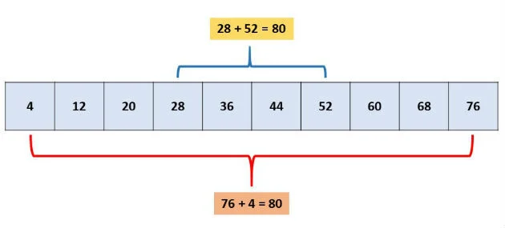
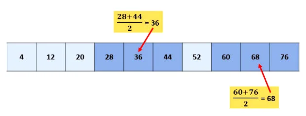
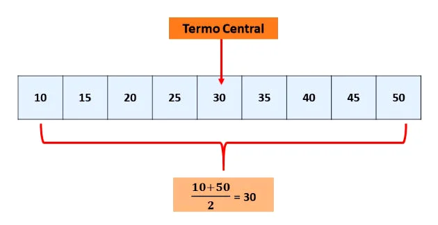
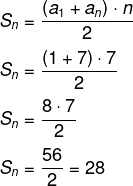

Razão:
r = a2 - a1
r = 9 - 2
r = 7
Encontrando o 10º termo:
a10 = a1 + (n - 1) * r
a10 = 2 + (10 - 1) * 7
a10 = 2 + 9 * 7
a10 = 2 + 63
a10 = 65
Ex: (2, 2, 2, 2...)
Ex: (2, 4, 6, 8, 10...)
Ex: (10, 8, 6, 4, 2...)
Em uma P.A finita, a soma dos dois elementos dos extremos é igual a soma dos dois termos equidistantes
Considerando três termos consecutivos de uma P.A., o termo do meio será igual a média aritmética dos outros dois termos
Em uma P.A. finita com número de termos ímpar, o termo central será igual a média aritmética entre termos equidistantes deste. Esta propriedade deriva da primeira

Questão:
(Enem 2012) - Jogar baralho é uma atividade que estimula o raciocínio. Um jogo tradicional é a Paciência, que
utiliza 52 cartas. Inicialmente são formadas sete colunas com as cartas. A primeira coluna tem uma carta, a segunda tem
duas cartas, a terceira tem três cartas, a quarta tem quatro cartas, e assim sucessivamente até a sétima coluna, a qual tem
sete cartas, e o que sobra forma o monte, que são as cartas não utilizadas nas colunas.
A quantidade de cartas que forma o monte é:
A) 21
B) 24
C) 26
D) 28
E) 31
Resolução:
Alternativa B
Primeiro vamos calcular o total de cartas que foram usadas. Estamos trabalhando com uma PA cujo primeiro termo é 1 e a razão também é 1. Então, calculando a soma das 7 fileiras, o último termo é 7 e o valor de n também é 7.

Sabendo que o total de cartas usadas foram 28 e que há 52 cartas, o monte é formado por: 52 – 28 = 24 cartas